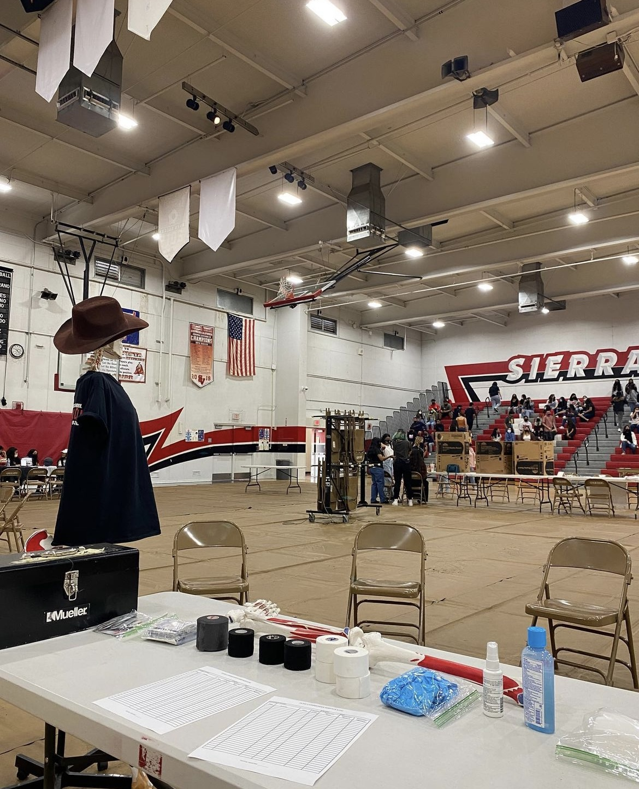
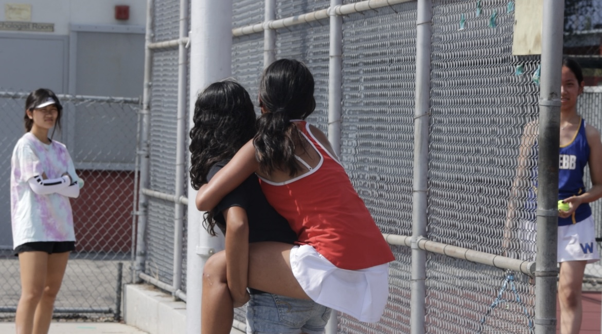
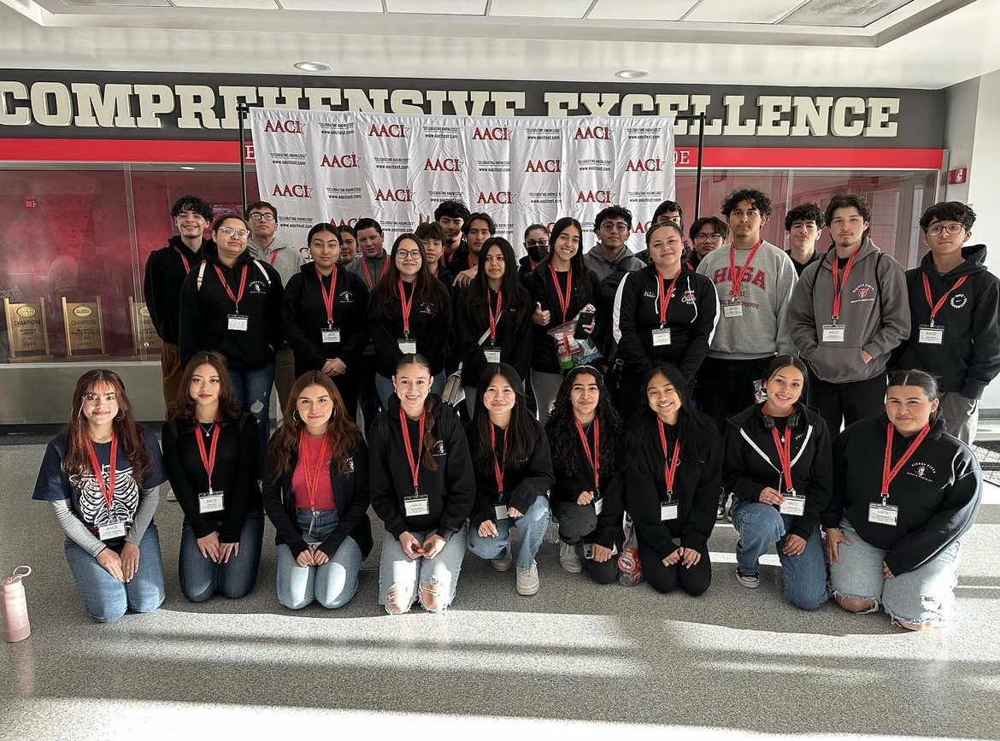
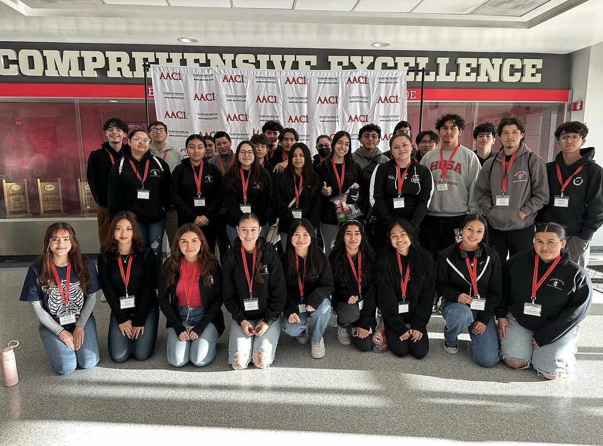

Nicole Aguilar
I am a first year student at the University of California, Riverside (UCR). I was admitted undeclared in the College of Humanities and Social Sciences. However, I am transitioning into the College of Natural and Agricultural Sciences for Biology to get a Bachelors of Science degree. After college, I am interested in pursuing a pre-health career. I don’t know what type of physician I’d like to be just yet. As a result, I have joined a couple of UCR’s healthcare organizations to help aid my pre-health journey. These organizations provide panels with guest speakers to inform students about different healthcare related topics (exams, career paths, applications, mentorship etc.). To add, they also provide workshops where we get to practice different skills like suturing and cpr.
I grew up in the Los Angeles area with my siblings, mom, and grandparents. As my grandparents got older and began to feel the ramifications of aging I spent a lot of time in hospitals with them. Watching nurses and doctors ameliorate my grandparents' symptoms was very inspiring. It piqued my interest to consider pursuing a similar career. Saving a life or improving the life of those who are ill is so incredible. I hope to one day be able to spend my time giving people a chance at a better life. To begin getting experience, I was a part of my school’s Sports Medicine program for all four years of highschool. In doing so, I acquired many skills to tend to injuries. Being the first on the scene to assess the injury, to then provide a quick solution, to then working the following weeks to help the students recover was very rewarding. Aside from just learning skills to help their injuries I also advanced my people speaking skills and bedside manner skills.
At the same time, I joined multiple clubs during my highschool years. I first started with our school's Leadership Experience and Opportunities Club (Leo) during my freshman year in order to enhance my social abilities and create new friendships with the people I met along the way. Leo Club is most known for helping students find local community service events. Having been in Leo Club, I went to a variety of events that ranged from helping set up for the LA Marathon to helping decorate floats for the annual Rose Parade in Pasadena. Along with Leo Cub, I also joined the National Honors Society program (NHS) at our school. NHS is one of the only clubs at our school that requires members to have good academic standing as well as submit applications to later be interviewed by the board members. I joined during the second half of my Freshman year. During my sophomore year I later applied for Secretary to serve that role during my Junior Year. And in my final year, I became President. I ran club meetings and delegated tasks to my fellow board members. I applied for leadership positions in all the clubs I was a part of because I wanted to help provide the same experience I had in the past for our new members.
Experience
Sports Medicine
• Clinical Hours: volunteering after school to oversee sports in case of injury
• Informational projects about diseases for awareness months; presented to students on campus
• AACI Competition
Education
University of California Riverside
Portfolio




